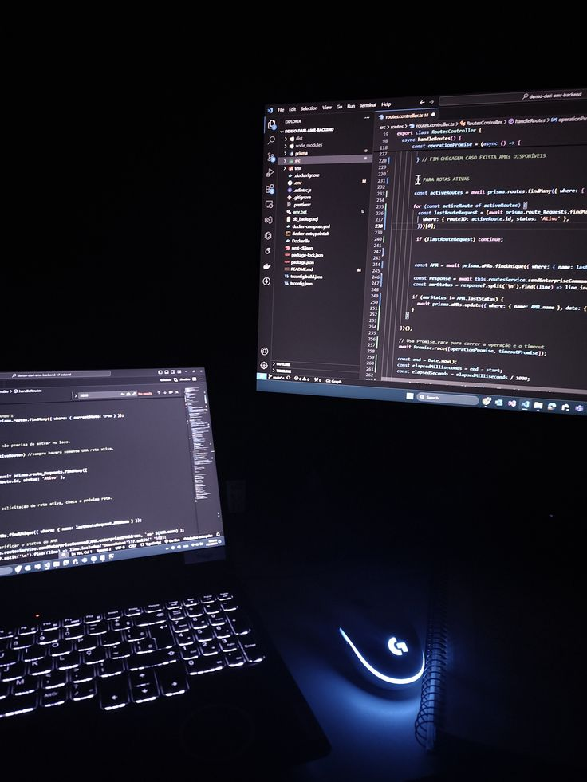

.png)
Structures sanitaires
Application de gestion avec authentification, statistiques, recherche, cartographie et gestion de données.
Étudiant développeur et passionné par le développement full-stack, l'intelligence artificielle, le Machine Learning et la cybersécurité.
Un profil qui évolue du développement d'applications vers l'IA et la cybersécurité.

Passionné par le développement logiciel, je travaille principalement avec Java et Spring Boot pour le back-end, tout en développant mes compétences en HTML, CSS, JavaScript, PHP et React.
Mon parcours m'a également conduit vers Python, le Machine Learning et les architectures RAG. J'aime transformer une notion étudiée en cours en application concrète.
Je m'intéresse enfin aux réseaux et à la sécurité, notamment à travers GNS3, VMware, Linux, Docker, Nginx et les architectures DMZ.
Les technologies rencontrées au fil de mes formations, stages et projets.
De la formation au développement, puis vers l'IA et la cybersécurité.
Parcours orienté développement d'applications, développement web, IA, cybersécurité, bases de données et conception.
Développement d'applications avec Spring Boot, PostgreSQL, Leaflet.js, Firebase et Bootstrap.
Travaux sur Random Forest, analyse d'images, régression et implémentation de la descente de gradient.
Ingestion de documents, chunking, embeddings, recherche vectorielle ChromaDB et génération avec un LLM local.
Expérimentation d'une architecture LAN / DMZ / WAN avec VMware, Alpine Linux, Docker et Nginx.
Découverte de la programmation asynchrone avec runBlocking, launch et delay.
Des projets qui montrent aussi bien mes compétences de développement que mes explorations en IA et cybersécurité.
Application de gestion avec authentification, statistiques, recherche, cartographie et gestion de données.

Participation au développement frontend d'une plateforme de gestion avec Django.
Application de suivi de flotte pour le recensement, l'état et la localisation des véhicules.
Assistant documentaire avec embeddings, recherche sémantique, ChromaDB et LLM local.
Application de Machine Learning basée sur l'analyse d'images et Random Forest.
Implémentation Python d'un algorithme d'optimisation capable de gérer plusieurs variables.
TP sur le chiffrement symétrique, asymétrique, hybride et le hachage.
Architecture LAN / DMZ / WAN expérimentée avec GNS3, VMware, Linux, Docker et Nginx.
Travaux pratiques sur la programmation asynchrone et l'ordre d'exécution des coroutines.
Projet de conception avec analyse du besoin, objectifs, faisabilité et cadre logique.